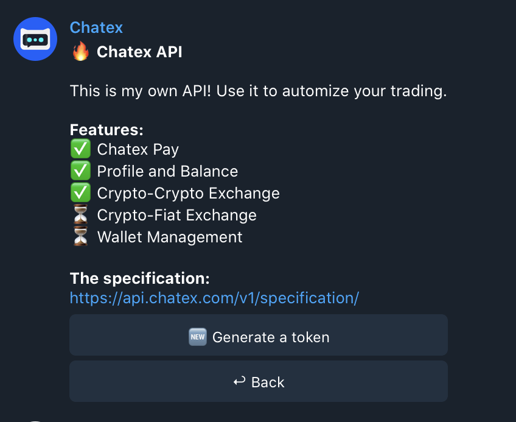

The majority part of requests should contain authorization header. It should be passed in these requests in the Authorization header in the bearer format: Bearer YOUR_TOKEN.
Currently, we have 2 kind of tokens:
You have to go to the section Profile → Settings → Chatex API in the @chatex_bot.
Important: Access token has an expiration in 1 hour.
curl --request POST 'https://api.chatex.com/v1/auth/access-token' \ --header 'Authorization: Bearer YOUR_REFRESH_TOKEN'See endpoint details.